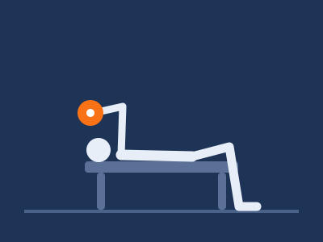

Французский жим

Разгибание рук лёжа, штанга опускается за голову. Упражнение на трицепс.
Характеристики
- Основные мышцы: трицепс
- Снаряжение: штанга (лучше изогнутый гриф), скамья
- Уровень: средний
- Рекомендация: 3 подхода по 10–12 повторений
Техника выполнения
- Ляг на скамью и возьми штангу узким хватом.
- Подними штангу над грудью на прямых руках.
- Сгибая локти, опусти штангу за голову.
- Разогни руки обратно.
Частые ошибки
- Локти разводятся в стороны.
- Движение плечами.
- Слишком быстрое опускание.